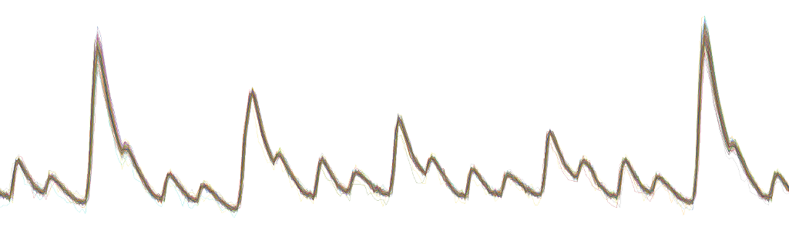

This is my version of ChipWhisperer (git://git.assembla.com/chipwhisperer.git)
You're looking at the first drop of several, please be patient and give me some time for cleaning up.
Various small improvements:
Additional functionality:
The intention is to stay near the original code base, making all changes in the least invasive way possible.
I have no write permission to the original repository and can't contribute directly. Using the fork I am sharing my work with the public and also with the ChipWhisperer team. Hopefully they will pull them into the main codebase.
Thanks to Colin O'Flynn for making ChipWhisperer open-source. This extension would not exist otherwise. Also, because of it, I learned python, git, and markdown. Thanks for that!
Marc